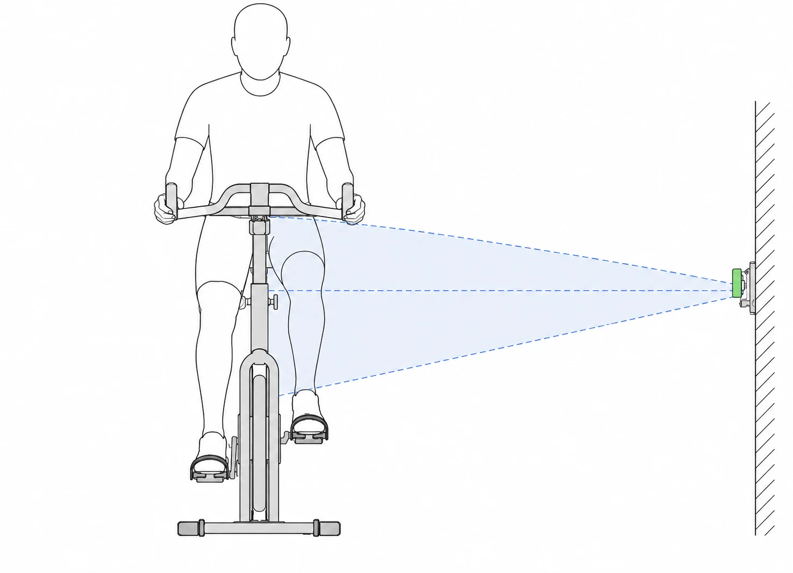
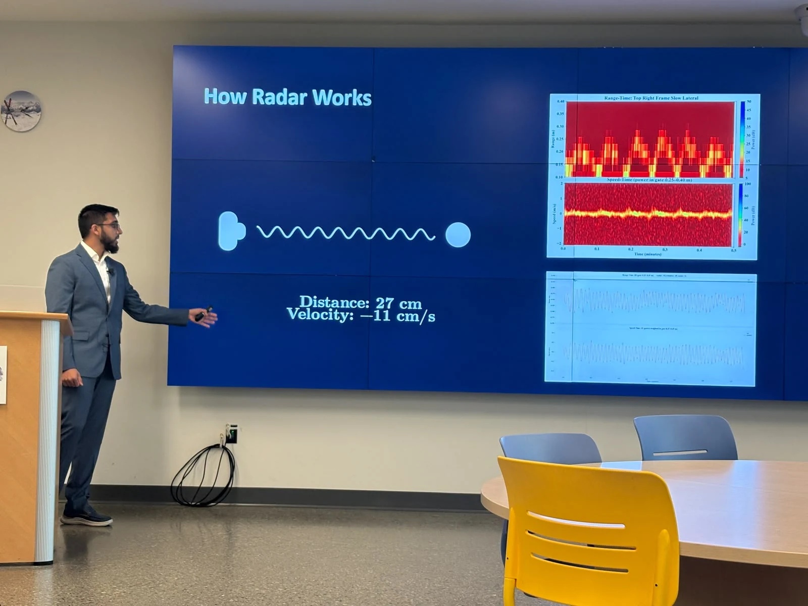
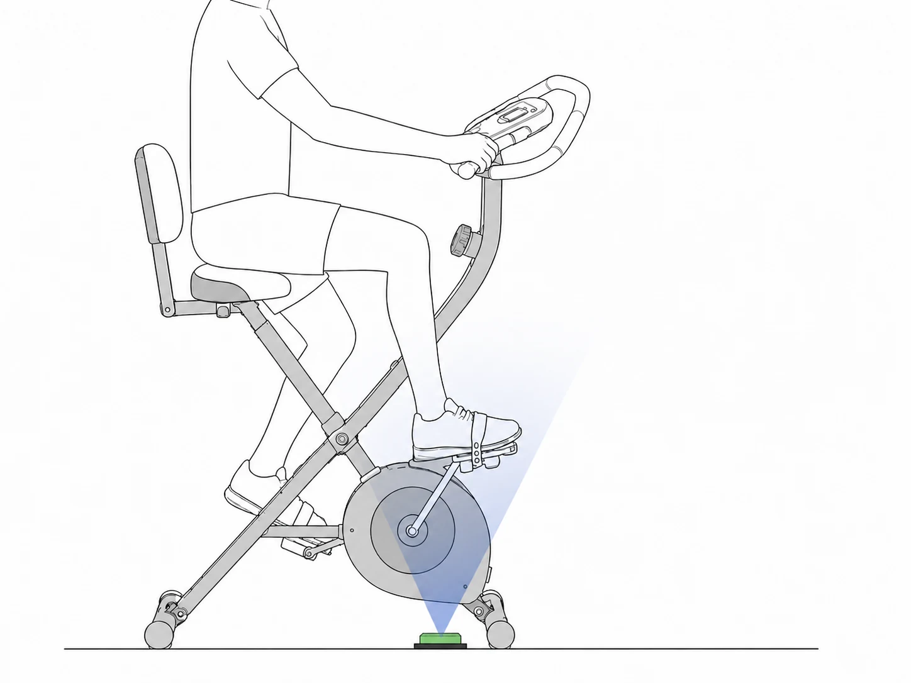
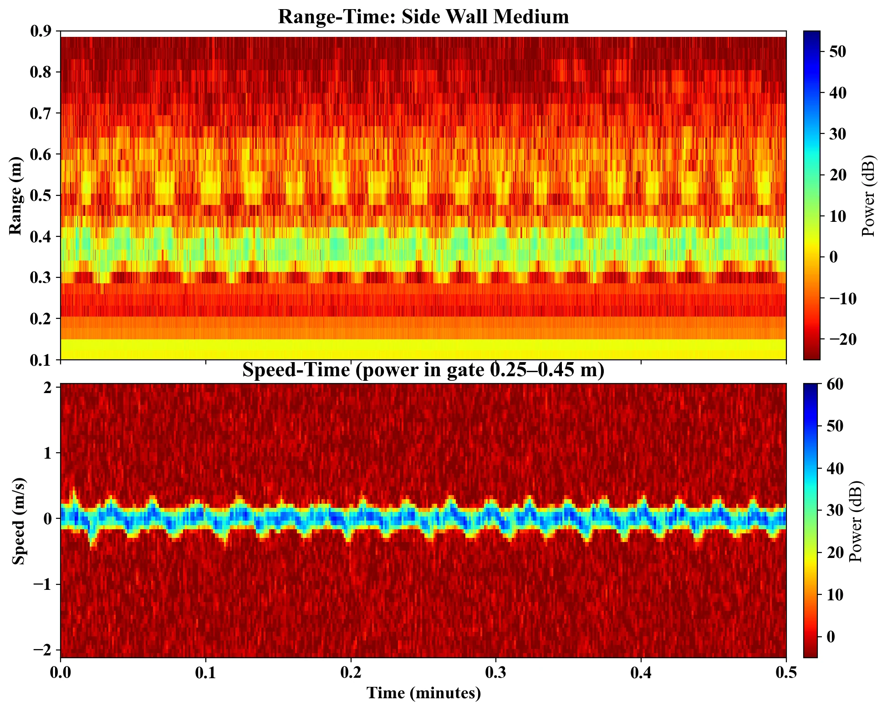
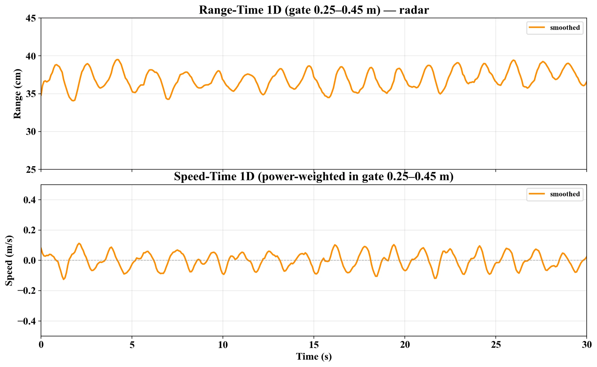
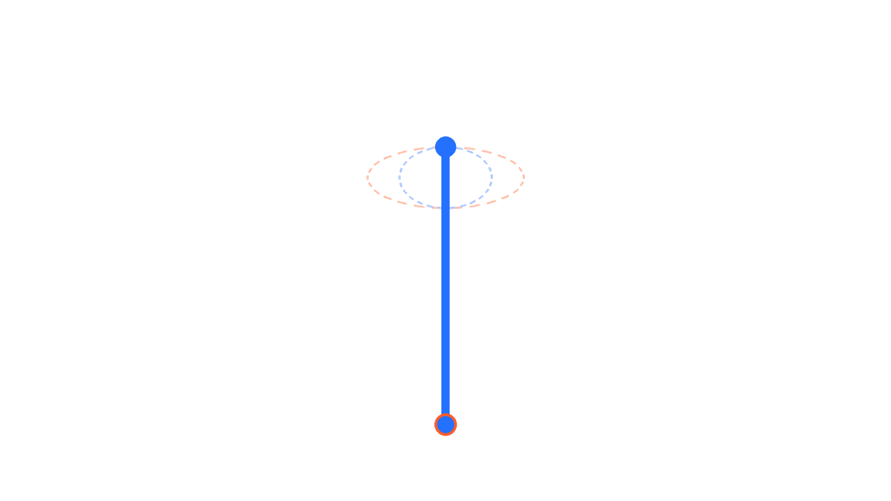
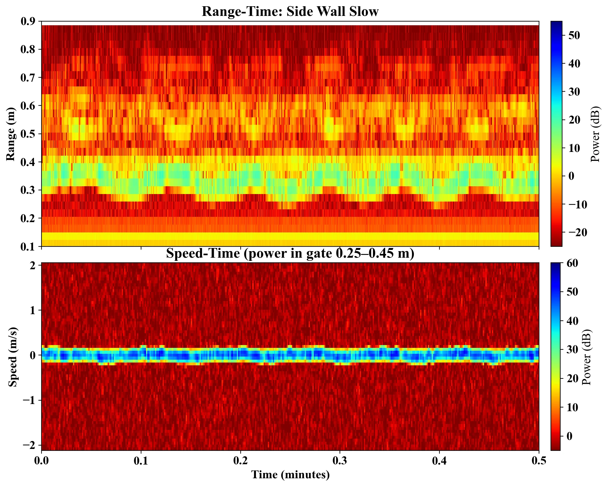
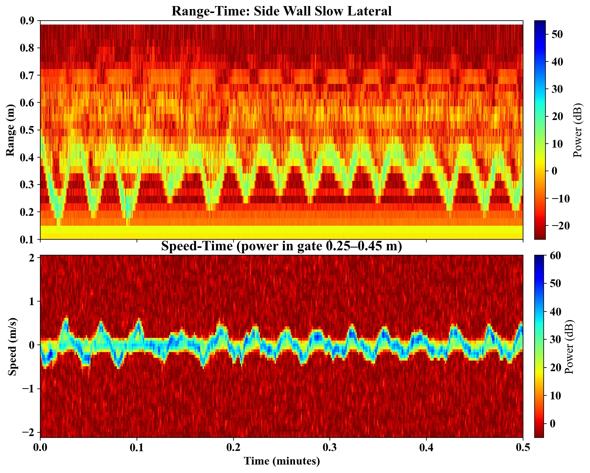
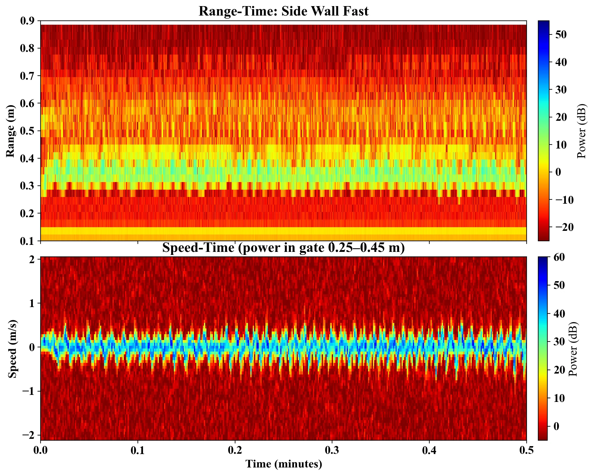

Side-facing
Lateral knee motion
The side-facing configuration measures changes in the knee joint's lateral range throughout the pedal cycle.
May 2026 – August 2026
Designing a stationary bike equipped with compact FMCW radar sensors for contactless measurement of limb mobility through biking cadence, lateral motion of the knee joint, and limb force asymmetry.

Experimental configurations
Two sensor viewpoints were used to isolate lateral knee motion and limb force asymmetry.

The side-facing configuration measures changes in the knee joint's lateral range throughout the pedal cycle.

The under-foot configuration compares downward and upward ankle velocity as an indicator of asymmetric pedaling effort.
Analysis methods
The analysis pipeline produced complementary two-dimensional and one-dimensional views of each cycling trial.

Heatmaps identify the range and velocity of the limb.

Noise-filtered, weighted-average trajectories expose cadence and cycling speed.
Motion models
The following animations (Python + Manim) visualize motion abnormalities and how radar detection works.

An injured leg struggles to push down while cycling. As a result, it has a slower downstroke and compensates with a faster upstroke. This erratic motion can be detected through velocity analysis of the ankle.

A patient who struggles to control their limbs will have excessive sway in their limb. Radar can detect this by measuring the lateral distance of the knee joint.
Representative results
Drag each divider to compare matched tests. The upper plot shows reflected power by range over time; the lower plot shows reflected power by signed velocity.


Comparing changes in range amplitude and velocity extent helps distinguish added lateral knee motion from the reference cycling pattern.
Drag the divider to compare tests
A shorter period between repeating features indicates faster cycling. The regularity of that spacing over time indicates cadence consistency.
Drag the divider to compare tests